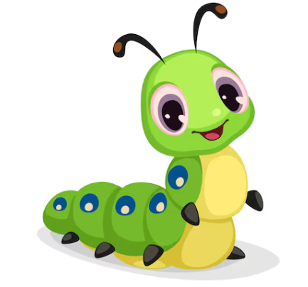

By Christina Rossetti

Brown and furry
Caterpillar in a hurry,
Take your walk
To the shady leaf, or stalk,
Or what not,
Which may be the chosen spot.
No toad spy you,
Hovering bird of prey pass by you;
Spin and die,
To live again a butterfly!